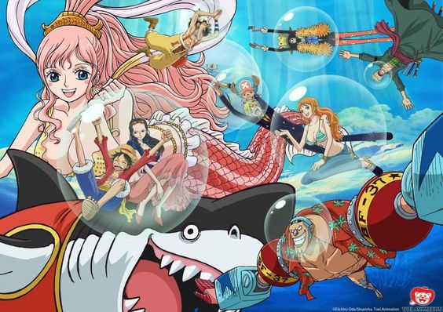
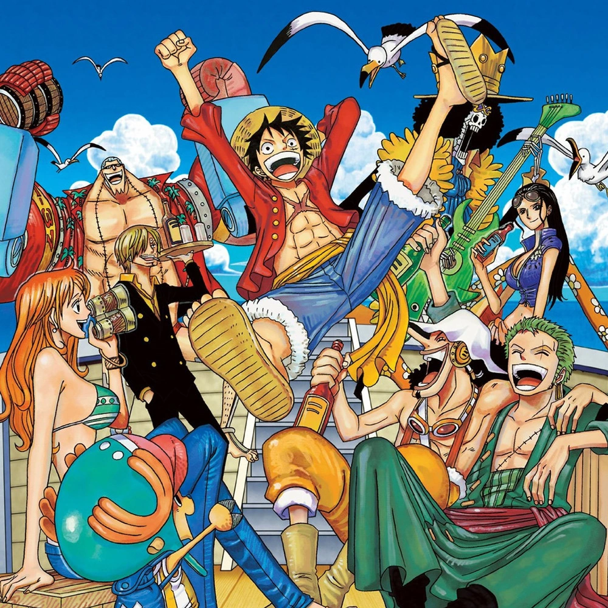
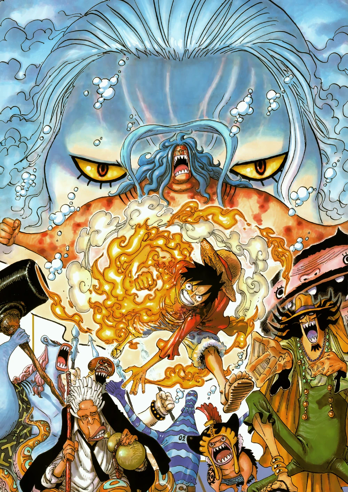

Fish-Man Island Saga

Return to Saboady Arc

Setelah dua tahun berlatih, kru Topi Jerami berkumpul kembali di Sabaody. Mereka
harus menghadapi bajak laut palsu yang mengaku sebagai Bajak Laut Topi Jerami. Arc
ini menampilkan dinamika baru di antara anggota kru dan menunjukkan perkembangan
kekuatan mereka selama periode pemisahan.
Episode: 517-522
Fish-Man Island Arc

Kru menuju Pulau Manusia Ikan, di mana mereka bertemu dengan Hody Jones, seorang
manusia ikan yang memiliki kebencian mendalam terhadap manusia. Konflik di pulau ini
menggali tema diskriminasi rasial dan perjuangan untuk persatuan antara manusia dan
manusia ikan. Luffy dan kru terlibat dalam pertempuran untuk melindungi pulau dan
rakyatnya.
Episode: 523-541, 543-574
Toriko Crissover Arc